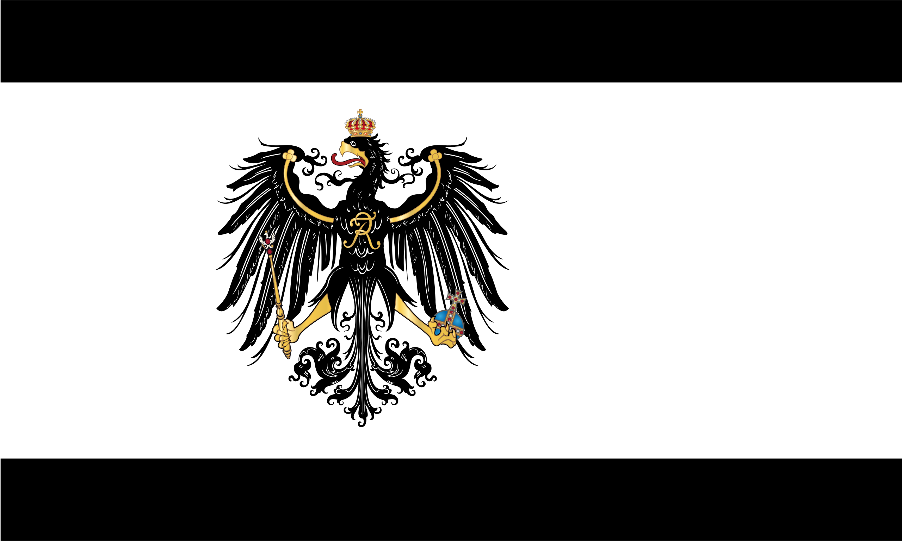
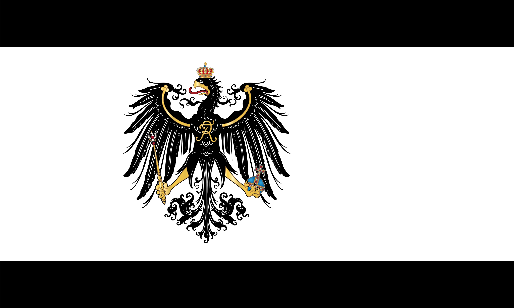

Best Flags
Now in the end I want to go through what I think are the best country flags for their look/design.
| Rank | Country | Flag Use |
|---|---|---|
| 1 | Nepal | Modern |
| 2 | United Kingdom | Modern |
| 3 | Japanes Empire | 1900s |
| 4 | Prussia | 1800s |
| 5 | United States | 1700s |

 

Some possible questions.
- Newest national flag
- Mauritnia
- Most common flag colors
- Red than White than Blue
- Most common flag color combination
- Red White and Blue
- Rarest flag color
- Purple
- Most common flag aspect ratio
- 2:3 then 1:5